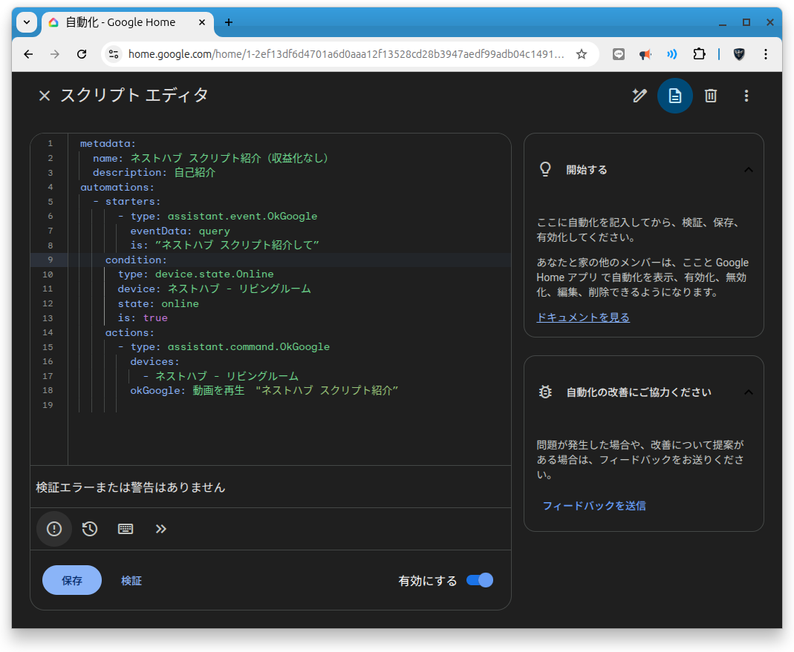
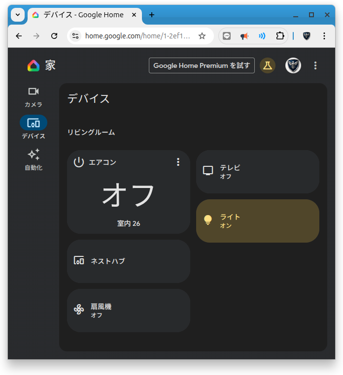

About this Project

Google Nest Hubのスクリプト機能を用いたカスタマイズ例を紹介します。 スクリプトで条件や動作を作成し、Google Nest Hubの機能させます。
Video
Implementation
今回は「ネストハブ スクリプトを紹介して」としたときに、Google Nest Hubで特定の動画を再生するスクリプトを作成しました。 Google Nest HubのGUIでも同様の設定はできますが、エンジニアにはわかりやすいと思います。
metadata:
name: ネストハブ スクリプト紹介
description: 自己紹介
automations:
- starters:
- type: assistant.event.OkGoogle
eventData: query
is: "ネストハブ スクリプトを紹介して"
condition:
type: device.state.Online
device: ネストハブ - リビングルーム
state: online
is: true
actions:
- type: assistant.command.OkGoogle
devices:
- ネストハブ - リビングルーム
okGoogle: 動画を再生 "ネストハブ スクリプト紹介"
解説
- metadata: スクリプトの基本情報を定義します。nameはスクリプトの名前、descriptionはスクリプトの説明です。
- automations: 自動化のルールを定義するセクションです。
- starters: 自動化を開始する条件を定義します。ここでは、ユーザーが「ネストハブ スクリプトを紹介して」と言ったときにトリガーされます。
- condition: アクションが実行される前に満たすべき条件を定義します。ここでは、Nest Hubがオンラインであるかとしています。
- actions: 条件が満たされたときに実行されるアクションを定義します。ここでは、Google Nest Hubで特定の動画を再生するアクションを設定しています。
補足
スクリプトでしかできないロジックの作成を考えましたが、思いつきませんでした。
OS / Environment
- Google Home Script Editor
- Google Nest Hub (第2世代)
Key Features
- 柔軟なスケジュール設定: GUIでは難解な条件設定が可能。
- デバイスブロードキャスト連携: Nest Hubの機能を直接制御し、動画再生を実現。
不具合報告😯
以前のスクリプトについて日付が正しく取得できませんでした。
今回は簡単なスクリプトの紹介とさせていただきます。
Resources
Google Nest Hubのスクリプトエディタに関する公式の使い方は、以下のドキュメントをご参照ください。
Google Nest Hubのスクリプト設定方法Bonus
Scriptではありませんが、今回Google Home for web を使用して、 ブラウザーから家電を操作できることを知りました。。
